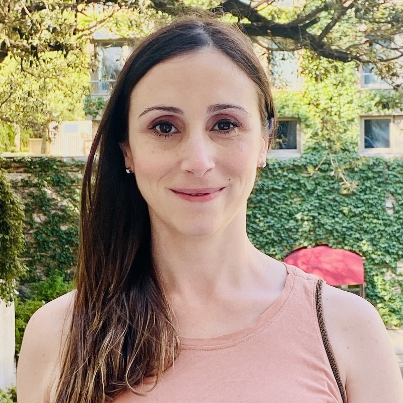
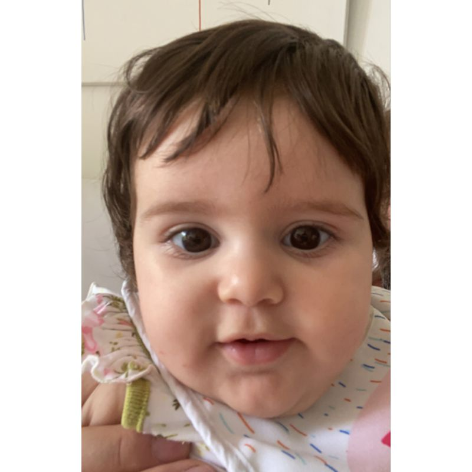

Conocé a nuestro equipo médico
Dra. Lorena Abusamra
Médica especialista en enfermedades infecciosas, egresada de la Universidad de Buenos Aires y Hospital Juan A. Fernandez.
Miembro de la Sociedad Argentina de Infectología.

Dra. María Ayelén Farbman
Médica especialista en enfermedades infecciosas, egresada de la Universidad de Buenos Aires y Hospital Juan A. Fernandez.
Miembro de la Sociedad Argentina de Infectología.

Dra. Paola Cañataro
Médica especialista en enfermedades infecciosas, egresada de la Universidad de Buenos Aires y Hospital Juan A. Fernandez.
Miembro de la Sociedad Argentina de Infectología.

Dra. Maite
Bebé, especialista en comer palta y no dormir.
Amante de los animales y seguidora de Plin Plim.